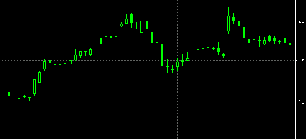
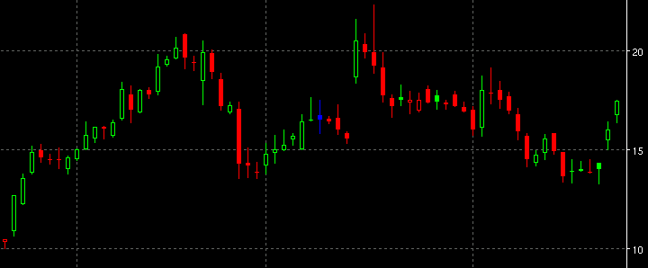

Candle Chart
This is the standard candlestick chart.
An empty box (traditionally white) candle body means that the
close was higher than the open.
A solid (traditionally black) candle body means that the
close was lower than the open.
The ChartPrefs menu enables choice of various types of candle chart, e.g. Candle, CandleQS, Volume Candle

CandleQS
This is a custom candle chart. An empty box (traditionally white) candle body means that the close was higher than the open. A solid (traditionally black) candle body means that the close was lower than the open. Colour adds another dimension. Red is a lower close than the previous close. Green is a higher close. Blue indicates no change from the previous close.

Volume Candle
Candles are specially coloured according to the day's volume.